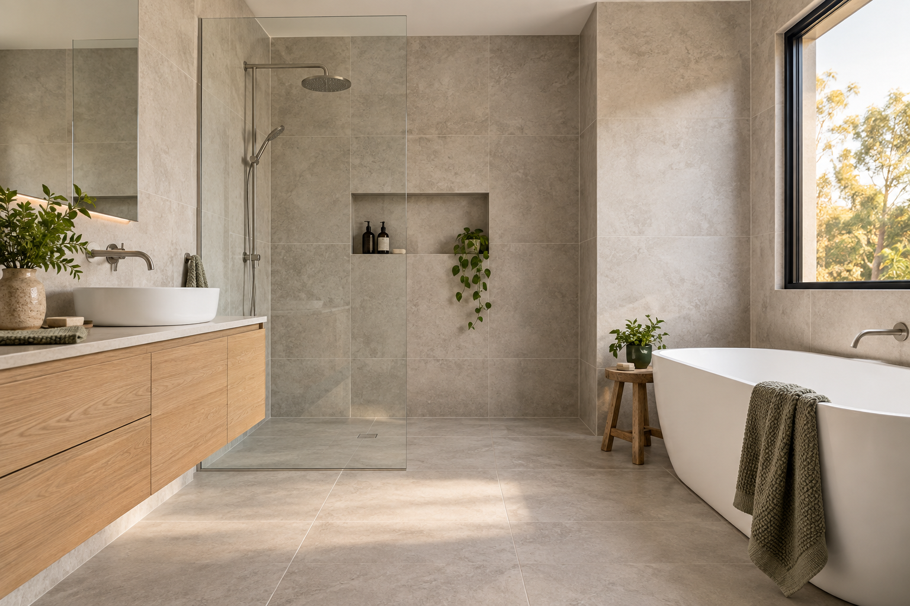

Bathroom waterproofing Adelaide
Prepare the bathroom before it is tiled.
Waterproofing and tiling are closely connected in a bathroom project.

Coordinate the wet-area work
Discuss the bathroom layout, current project stage and required finishes with Ellis before work progresses.
CALL 0425 170 688